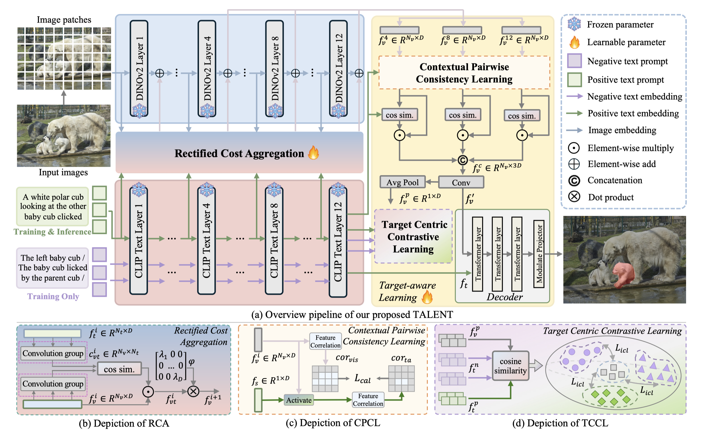

Problem-first Analysis
The paper does not just propose a module; it identifies NTA as a concrete bottleneck in PET-based referring segmentation.
CVPR 2026 Findings

Figure 1. TALENT introduces target-aware learning to suppress non-target activation in PET-based RIS.
TALENT studies referring image segmentation under parameter-efficient tuning. The paper shows that existing PET-based RIS systems often activate objects from the correct category but the wrong instance, a failure mode named non-target activation (NTA). TALENT attacks that mismatch by building stronger visual-text aggregation and adding target-aware learning objectives that force the model to emphasize the instance truly described by the text expression.
The framework starts with a Rectified Cost Aggregator (RCA), which builds richer visual-text interactions for text-referred feature aggregation. On top of RCA, TALENT introduces a Target-aware Learning Mechanism (TLM) composed of Contextual Pairwise Consistency Learning (CPCL) and Target Centric Contrastive Learning (TCCL). CPCL encourages holistic understanding of the referent through a text-referred affinity map, while TCCL sharpens target localization and suppresses unrelated same-category activations.
TALENT also formalizes the NTA issue with an explicit metric, NTA-IoU, so the paper evaluates not only final segmentation quality but also whether the model is attending to the correct referred instance.
The paper does not just propose a module; it identifies NTA as a concrete bottleneck in PET-based referring segmentation.
RCA and TLM improve target specificity without abandoning the efficiency advantages of parameter-efficient tuning.
CPCL improves contextual alignment, while TCCL helps the model distinguish the correct instance from nearby distractors.
The reported gains support the paper's main claim: once NTA is explicitly addressed with RCA, CPCL, and TCCL, the model becomes much better at selecting the correct referred instance instead of merely finding a visually similar object.
@inproceedings{jin2026talent,
title = {TALENT: Target-aware Efficient Tuning for Referring Image Segmentation},
author = {Jin, Shuo and Yu, Siyue and Zhang, Bingfeng and Yao, Chao and Liu, Meiqin and Xiao, Jimin},
booktitle = {Proceedings of the IEEE/CVF Conference on Computer Vision and Pattern Recognition (CVPR)},
pages = {7472--7482},
year = {2026}
}